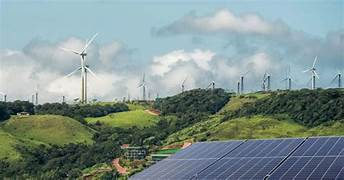

RECURSOS NATURALES

¿Que Son Los Recursos Naturales?
Los recursos naturales son todos aquellos elementos y materiales que se encuentran en la naturaleza y que los seres humanos utilizan para sobrevivir, desarrollarse y mejorar su calidad de vida. Estos recursos provienen directamente del medio ambiente, sin necesidad de que hayan sido creados por el ser humano.
Los recursos naturales pueden ser materia prima (como la madera o los minerales), fuentes de energía (como el sol y el viento), o recursos esenciales para la vida, como el agua, el aire y el suelo.
¿Que Diferencia Hay Entre Los Recursos Renovables Y Los No Renovables?
- Renovables:Se regeneran(sol, viento, agua)
- No Renovables:Se agotan(petroleo, carbon, construir, alimentar y curar
¿Como Lo Usamos?
- Para generar energía, fabricar productos, construir, alimentar y curar.
¿Que Problemas Hay?
- La sobreexplotación, la contaminación y la mala gestión provocan su escasez y afectan al planeta.